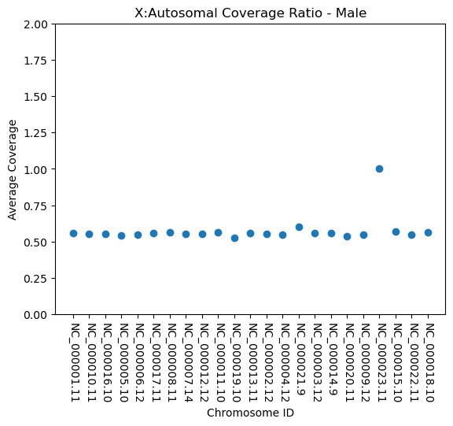

The human reference genome build GRCh38 was downloaded from NCBI using the script "download_reference_genome.sh." Because I needed to be able to simulate reads from male and female reference genomes, I created artificial diploid reference genomes for both sexes using "make_simulated_chromosomes.py." Next, 10,000 random, paired-end sequences were generated using wgsim with default parameters implemented in the script, "simulate_shotgun_reads.sh." Once the simulated reads were generated, they were aligned to the GRCh38 reference genome using Bowtie2 with the "--local" flag. The aligned reads were then sorted using "samtools sort." Next, the depths were calculated for each position in each chromosome using "samtools depth." The alignment, sorting, and depth commands were implemented in the "align_with_bowtie2.sh" script.
To determine the average depth for each chromosome, the total depth for each chromosome was computed by summing the depths at each position and the total depth was divided by the length of that chromosome (implemented in "calculate_coverage_depth.py"). This process was repeated for data from both male and female mock genomes. The results of the X:Autosomal coverage ratios are shown in Figure 1.
After looking at the resuts of the X:Autosomal, average coverage ratio plots, it was was apparent that something may have not gone correctly in the process because the plots were identical. Because the X:X average coverage rato was one for both the male and female simulated genome, I had the idea that the wgsim may not have worked as I expected and possibly it got confused by having an input file that contained repeated FASTA IDs. To test this theory, I creted a test FASTA file named "wgsim_test.fa" in which the IDs were the same, but the sequences were entirely different: one was only A repeats and the other was only C repeats. Next, I used this FASTA file as a reference genome and simulated 10 reads total with wgsim (implemented in "wgsim_validation.sh"). After looking at the output of the wgsim test, I learned that I was wrong and wgsim does not care about the FASTA IDs. It generates reads from each sequence in the reference genome.
I next tried to figure out how the authors of the Zonkey pipeline calculated
their coverage. After looking around in their GitHub repo, I found on one
page that they caluculate hits as:
Sum of SE, PE_1, and PE_2 hits. Note that supplementary
alignments, duplicates, reads that failed QC, secondary
alignments, and unmapped reads are ignored.
Using this definition for hits, I wanted to see if we could get more accurate
X:autosome ratios. I used the sam files generated by the "align_with_bowtie2.sh"
script and selected only those alignments that met the criteria of:
Next, I counted the number of alignments that passed these filtering criteria and grouped the counts by the chromosome the reads mapped to. Then, for each chromosome, I divided the number of counts by the length of that chromosome. Finally, I divided the normalized coverage of the X chromosome by the normalized coverages for each of the autosomes. This entire process, using the adapted version of the Zonkey method, was done for both male and female artifical genomes, and the results are plotted in Figure 2.
I next asked the question, does sequencing depth effect the X:Autosomal ratios? To test this, I ran the same pipeline for simulating shotgun read generation from an artifical genome, and I used the sequencing depths 100, 250, 500, 1000, 2500, 5000, and 7,500. To make the analysis more streamlined, I combined the pipeline into one script titled "read_depth_pipeline.sh." The results from varying the seqencing depth are plotted in Figure 3.
The next question became, does preforming multiple runs of the read simulation and chromosome mapping give wildly different coverage results? To answer this question, I simulated 2500 reads from the male and female mock genome respectively for 100 runs and plotted the results in Figure 4. Additionally, I ran the same repeated simulations at a sequencing depth of 5000 reads, and the results are shown in Figure 4.
Figure 1. Plots of the average coverage of X chromosome divided by average coverage for each chromosome.

Figure 2. Plots of the normalized coverage of the X chromosome divided by normalized coverage for each chromosome.
Figure 2. Plots of the normalized coverage of the X chromosome divided by normalized coverage for each chromosome with varying sequencing depth.
Figure 3. Box and whisker plots of normalized coverage for each autosome divided by the normalized coverage for X for 100 runs at a sequenceing depth of (top) 2500 and (bottom) 5000.
The next question became, will scims actually work on real human data? To test this, I ran the pipeline on fecal metagenomic data from the TwinsUK study.
Data was transfered by Emily Davenport to the "/gpfs/group/exd44/default/data/TwinsUK/BGImetagenomes" directory. Next, the data were quality filtered usign trimmomatic with a sliding window of 4 with a minimum average quality of 30. After quality filtering, the paired reads that passed the filtering step were used as input for SCIMS.


| Sample Name | | True Genetic Sex | | Total # of Reads Mapping |
|---|---|---|
| 36049 | F | 38285 |
| 36050 | F | 345092 |
| 36702 | F | 66208 |
| 36703 | F | 1352 |
| 37181 | F | 4905 |
| 37182 | F | 4084 |
| 37201 | F | 3632 |
| 37202 | F | 2290 |